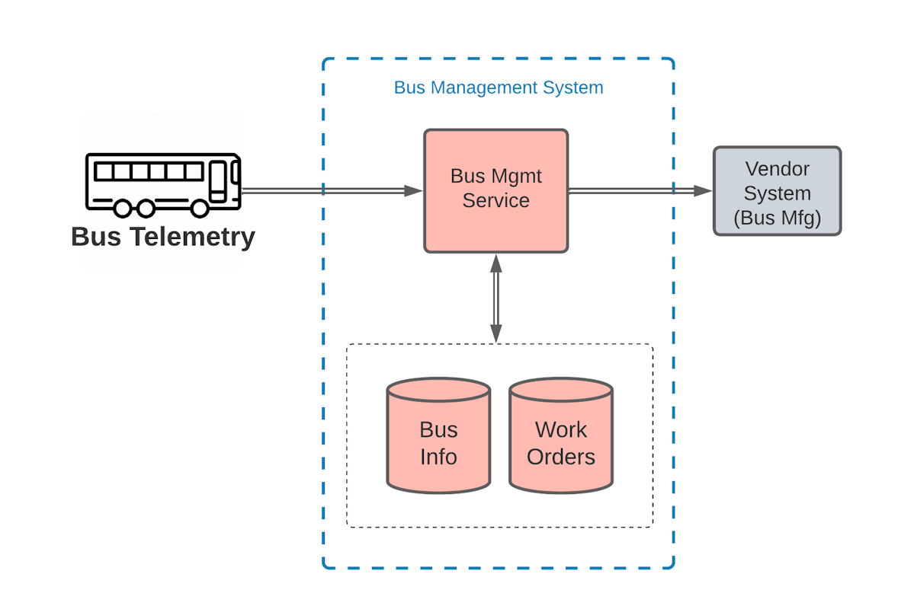
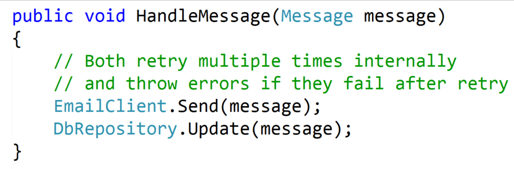
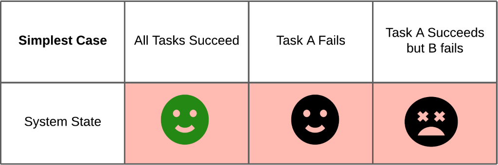
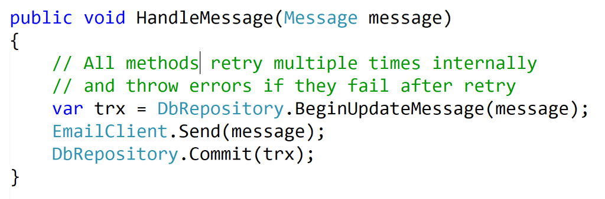
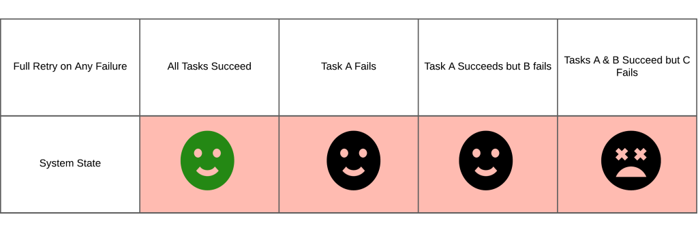
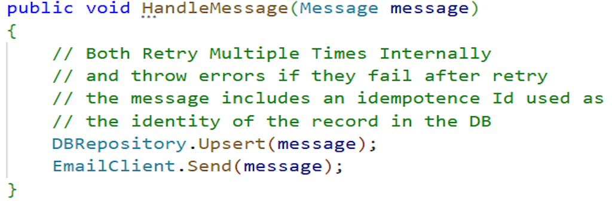
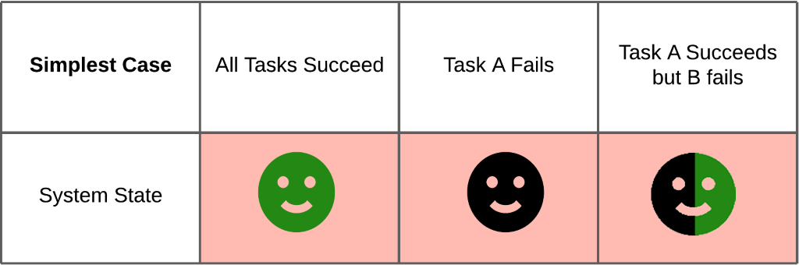
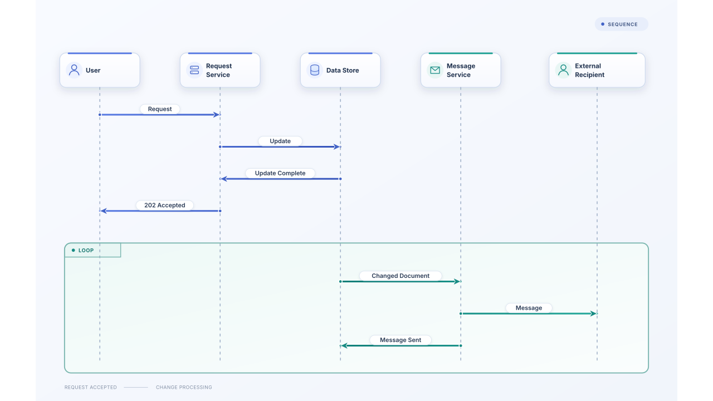
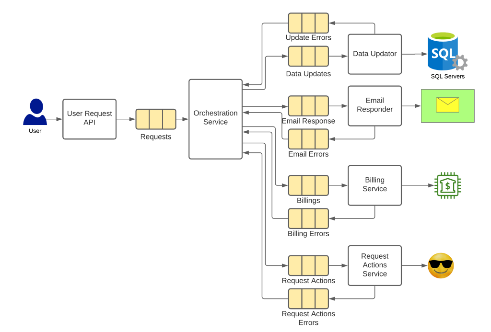
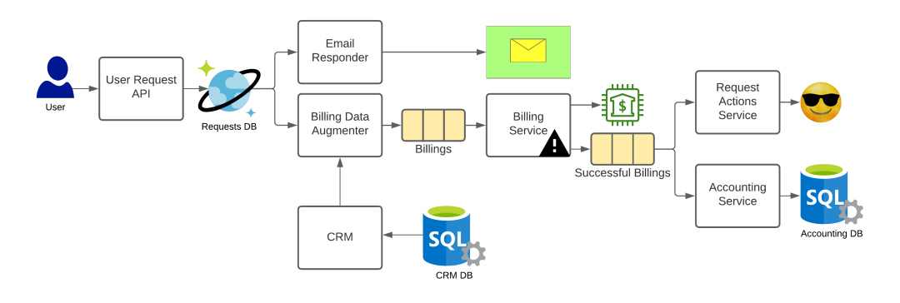

Eliminating Hidden Dangersto your ApplicationsPatterns for Reliable SystemsBarry S. StahlSolution Architect & Developer@bsstahl@cognitiveinheritance.comhttps://CognitiveInheritance.com |
Favorite Physicists
Other notables: Christiaan Huygens, Michael Faraday, Stephen Hawking, Leonard Susskind |
Favorite Mathematicians
Other notables: Blaise Pascal, Daphne Koller, Grady Booch, Evelyn Berezin, Pascal Van Hentenryck |
|
 |




|
Two changes can be made to system state in a single execution context if:
|
An attempt to make more than 1 reliable change to the state of a system in a single invocation


Keep It Separate, Keep It Safe
|

Advantages
Disadvantages
Advantages
Disadvantages
|
|
|


| Pattern | How it coordinates work | Useful when |
|---|---|---|
| Routing Slip | A message carries the steps to visit. Each service does its work and routes it onward. | The route varies by request or by earlier results. |
| Actor Model | Independent actors own state and communicate through messages. | Many stateful tasks run concurrently and need isolation. |
| Try-Confirm-Cancel | Reserve resources across services, then confirm or cancel the reservations. | Multiple services must secure resources before committing a business operation. |
|
3-9's (unimportant)
4-9's (important)
5-9's (critical)
At-Least Once
At-Most once
Exactly once
|
Code Patterns Tools |